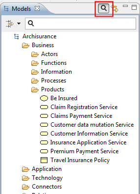
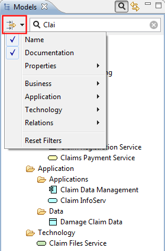
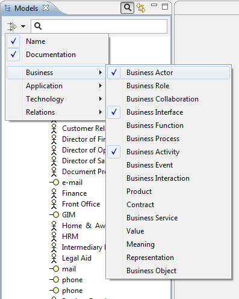
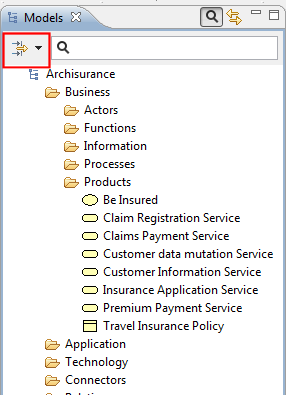

The number of elements in the Model Tree can grow quite considerably as you work on your model. Of course, you may wish to add sub-folders within the main folder structure to help organise your elements. However, finding a particular element in the tree may still prove to be difficult.
In order to search the Model Tree a Search Bar is included in Archi. This is accessed by clicking on the "Search" button on the toolbar of the Model Tree window. Clicking this button reveals the Search Bar:

The Search Bar revealed
As you type into the text field of the Search Bar the Model Tree updates to show only those elements that match the search criteria in the Search Bar. By default only the name of the elements is matched to the search string. You can also search on the "Documentation" field of the elements by ticking this in the "Filter Options" drop-down menu in the Search Bar:

Searching on both "Name" and "Documentation"
To clear the text selection click on the icon to the right of the text. To close the Search Bar and clear the search filter press the "Search" button one more time.
To filter certain types of element you can select the different types to include in the filter/search in the drop-down menu:

Searching for certain element types
To clear the element-type filter, press the main part of the "Filter Options" drop-down menu:

Press the main button to clear the filter
As you refine your search the Model Tree will only show those elements that match your search/filter criteria (or none at all if no elements match). Thus, folders with no matching child elements are not shown. If however you wish to show these empty folders as you search for elements (you may wish to drag and drop elements to other folders, for example) then you can set this as an option in Preferences.